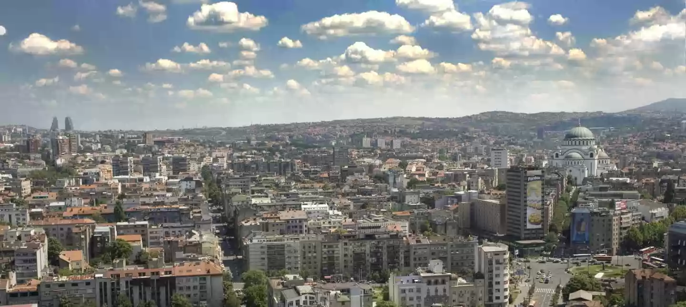

SRBIJA

Beograd je glavni grad Srbije, sa oko 1,7 miliona stanovnika. Jedan je od najstarijih gradova u Evropi i od davnina je značajno saobraćajno čvorište
kao raskrsnica puteva Istočne i Zapadne Evrope. Leži na dve međunarodne reke, na ušću reke Save u Dunav i vode reka ga opasuju sa tri strane. Zbog
takvog položaja, sa pravom je nazivan „kapijom Balkana“ i „vratima Srednje Evrope“.
Najstariji arheološki nalazi sa njegovog područja sežu u peti milenijum pre nove ere. Na obali Dunava nalazi se praistorijski lokalitet Vinča, sa
ostacima materijalne kulture praistorijskog čoveka (neolitska plastika). Pripadnici keltskog plemena su osnovali Singidunum u 3. veku pre nove ere,
a ovaj grad se pominje i u antičkim izvorima. Kasnije, ovu teritoriju osvajaju Rimljani, a podelom Rimskog carstva 395. godine on postaje deo Vizantije.
Sloveni su u 6. veku sve češće prelazili Dunav i trajno ostajali na ovom području, i tako je na kamenitoj uzvisini iznad ušća Save i nastalo njihovo
naselje – Beli Grad. Od 16. do 19. veka naziva se brojnim imenima, na raznim jezicima, kao što su: Alba Graeca, Alba Bulgarica, Bello grado, Nandor
Alba, Griechisch Weissenburg i Castelbianco, a svi su prevod slovenske reči Beograd. Naziv Beograd se prvi put pominje 878. godine, a tokom svoje duge
i burne istorije bio je pod okupacijom 40 armija i 38 puta je podizan iz pepela.
Godine 1403. despot Stefan Lazarević veštim diplomatskim potezima dobija Beograd od Ugara i on tada po prvi put dobija status srpske prestonice. Kasnije
su njime vladali Turci, napadali ga i osvajali Austrijanci. Od 1841. Beograd postaje prestonica Kneževine Srbije. Početkom 20. veka dolaze balkanski
ratovi, pa Prvi i Drugi svetski rat u kojima je Beograd ponovo rušen i obnavljan. Od 1918. je prestonica Kraljevina Srba, Hrvata i Slovenaca, 1929.
Kraljevine Jugoslavije, a od 1945. Jugoslavije sa socijalističkim uređenjem. Od 2006. Beograd je ponovo glavni grad samostalne države Srbije.
Prosečna nadmorska visina Beograda je 117 m, a u okolini u planine Kosmaj (628 m) i Avala (511 m). Dužina rečnih obala Beograda je 200 km i na tom potezu
nalazi se 16 rečnih ostrva, od kojih su najveća Ada Ciganlija i Veliko ratno ostrvo. Uže područje Beograda, urbani deo, obuhvata površinu od 36 km2,
a ukupna teritorija grada iznosi oko 322 km2. Obim šire gradske teritorije je 419 km.
Beograd je administrativno podeljen na 17 gradskih opština, od toga je 10 centralnih opština (Čukarica, Novi Beograd, Palilula, Rakovica, Savski venac,
Stari grad, Voždovac, Vračar, Zemun i Zvezdara) i 7 prigradskih (Barajevo, Grocka, Lazarevac, Obrenovac, Mladenovac, Sopot i Surčin). Geografski gledano
, Beograd čine tri celine: stari deo grada na desnoj obali Save i Dunava, Novi Beograd na levoj obali Save i Zemun na obali Dunava iza Novog Beograda.
Područje na levoj obali Dunava predviđeno je da tokom 21. veka postane „Treći Beograd“.
Klima u Beogradu je umereno kontinentalna, sa prosečnom temperaturom od 11,70C. Za Beograd je karakterističan jugoistočni i istočni vetar – košava,
koji donosi vedro i suvo vreme i najčešće duva u jesen i zimu, u intervalima od 2 do 3 dana.
Beograd je važno saobraćajno čvorište regiona: raskrsnica evropskih puteva E70 i E75, ukrštanje panevropskih koridora 7 i 10, veza sa glavnim
železničkim pravcima, međunarodni aerodrom „Nikola Tesla“ i dve međunarodne plovne reke. Obuhvata 3,6 % teritorije Srbije, u njemu živi 15,8%
stanovništva države, a radi 31,2% svih zaposlenih. U Beogradu su značajni trgovinski, bankarski, poljoprivredni i privredni kapaciteti, posebno
metalska, metaloprerađivačka i elektronska industrija, a stvara se 30% društvenog proizvoda Srbije.
Prestonica je srpske kulture, obrazovanja i nauke. U njemu je najveća koncentracija institucija iz oblasti nauke i umetnosti od nacionalnog značaja:
Srpska akademija nauka i umetnosti, osnovana 1886. kao Srpska kraljevska akademija; Narodna biblioteka Srbije, osnovana 1832; Narodni muzej, osnovan
1841. i Narodno pozorište, osnovano 1869. Grad je takođe i sedište Beogradskog univerziteta, osnovanog 1808. kao Velika škola, i Univerziteta umetnosti.
Beogradska tvrđava je najstariji kulturno-istorijski spomenik Beograda, a turistima su zanimljivi i boemska četvrt Skadarlija u centru grada, Konak
kneginje Ljubice, Kapetan Mišino zdanje, Stari i Novi dvor, zdanje Narodne skupštine, Hram Svetog Save…
Brojne lokalne i međunarodne pozorišne, filmske, muzičke i druge manifestacije kulturnog života (FEST, BITEF, BEMUS, BELEF, Oktobarski salon, Festival
dokumentarnog i kratkometražnog filma…) čine Beograd značajnim kulturnim centrom.
Beograd je domaćin brojnih međunarodnih i domaćih kongresa i sajmova. „Sava centar“ svojom univerzalnom namenom predstavlja jedan od najatraktivnijih
kongresno-kulturnih kompleksa u ovom delu Evrope. Na „Beogradskom sajmu“ godišnje se održava preko 40 međunarodnih sajamskih manifestacija.
Na beogradskim stadionima i sportskim terenima održana su brojna svetska i evropska sportska takmičenja, „Beogradska arena“ je univerzalna dvorana za
sve sportske, kulturne i zabavne događaje i raspolaže sa 20.000 mesta. Na Adi Ciganliji postoje otvoreni tereni za mnoge sportove, pogotovo one vodene
i ekstremne. U Beogradu se svake godine održava „Beogradski maraton“.
Nekada zaseban grad Zemun, a danas opština u sastavu Grada Beograda, je u 3. veku pre nove ere ovaj kraj je naselilo keltsko pleme Skordisci i nazvalo
ga Taurunum. Najviša tačka Zemuna je brdo Gardoš, sa koga se pruža pogled na ceo Zemun, Dunav i centar Beograda. Tu je i 36 metara visoka Milenijumska
kula, poznata i kao Kula Sibinjanin Janka, koju su 1896. podigle mađarske vlasti. Oblast oko Gardoša prepoznatljiva je po uskim ulicama sa kaldrmom i
specifičnoj arhitekturi. U podnožju, na Zemunskom keju na obali Dunava nalaze se brojni restorani sa živom muzikom, kafići i klubovi. To je i popularno
šetalište, stecište lokalnih alasa i umetnika, uz marine za čamce i galerije.